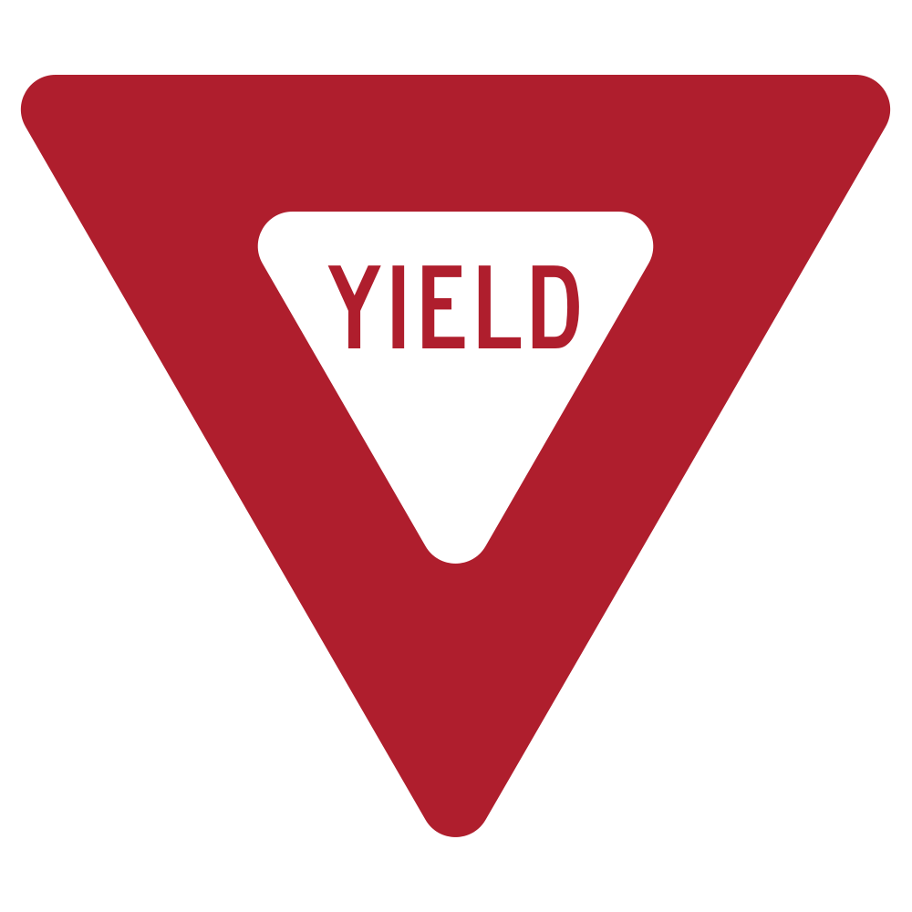
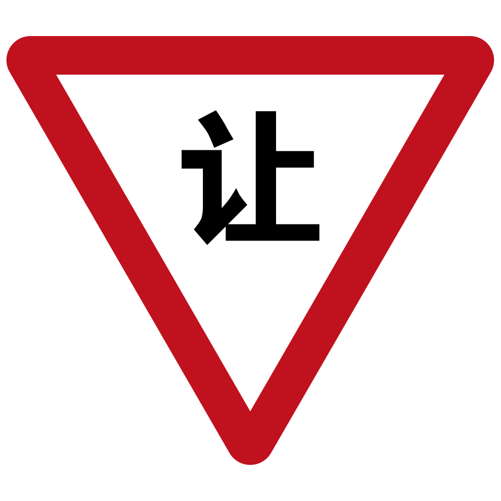
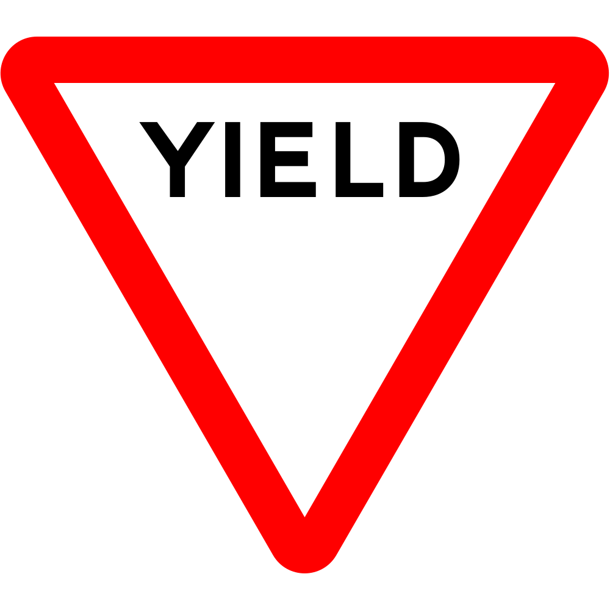
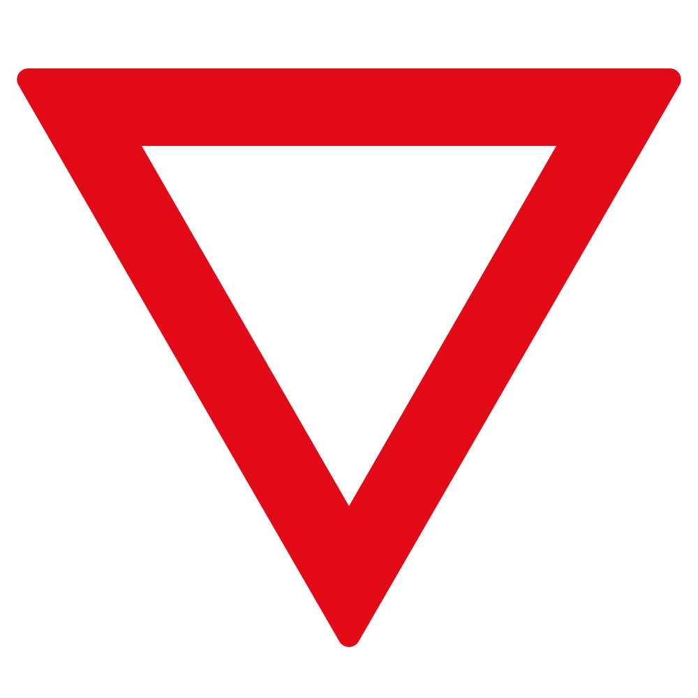
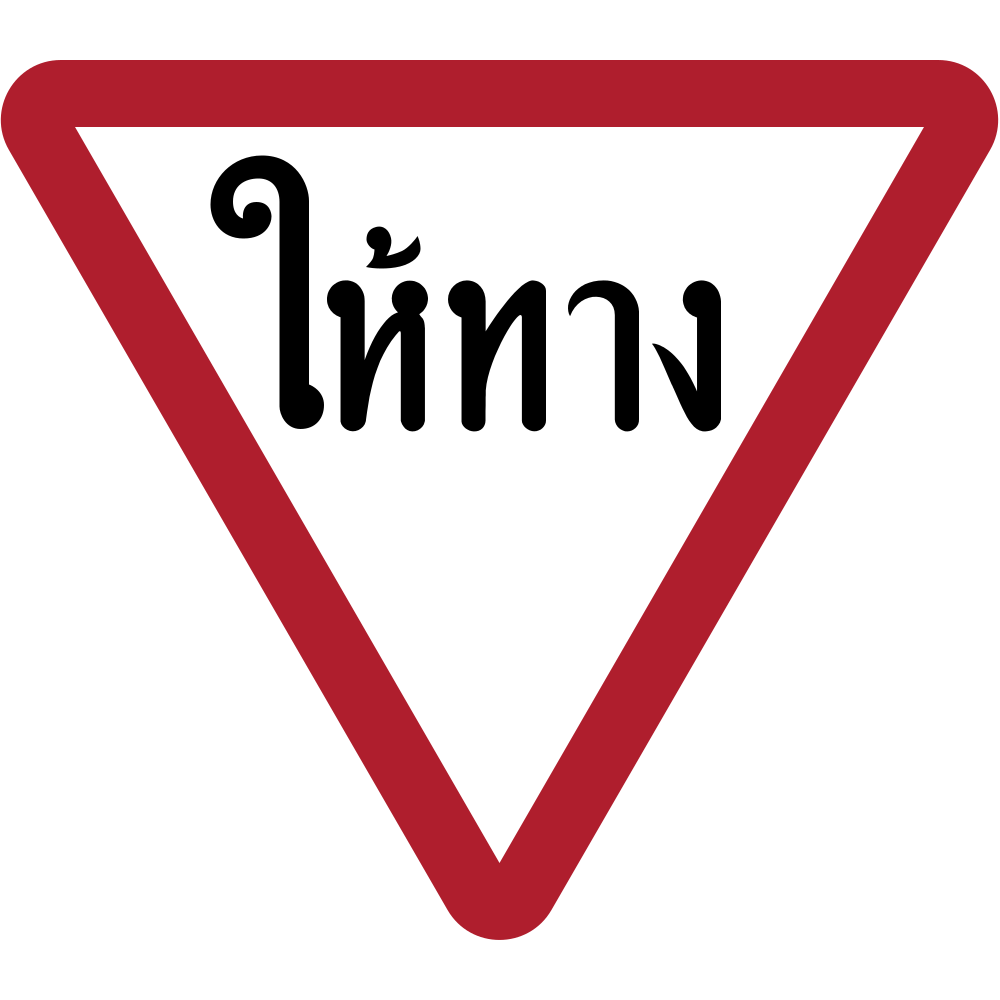

Yield
History
The yield or give-way sign originated in Germany in 1925. It was originally a downward-pointing black triangle. The modern red and white variation was first seen in Denmark in 1937. The 1968 Vienna Convention on Road Signs and Signals specifies a downward-pointing triangle with a red border and a white or yellow center.
Adoption
Yield is used in 20 countries and territories. They include the United States and its territories, Canada, and a mix of others across Africa, Asia and Europe. Give way is used in 71 countries and territories, most of them current or former British territories or Commonwealth members.
Sources

US



